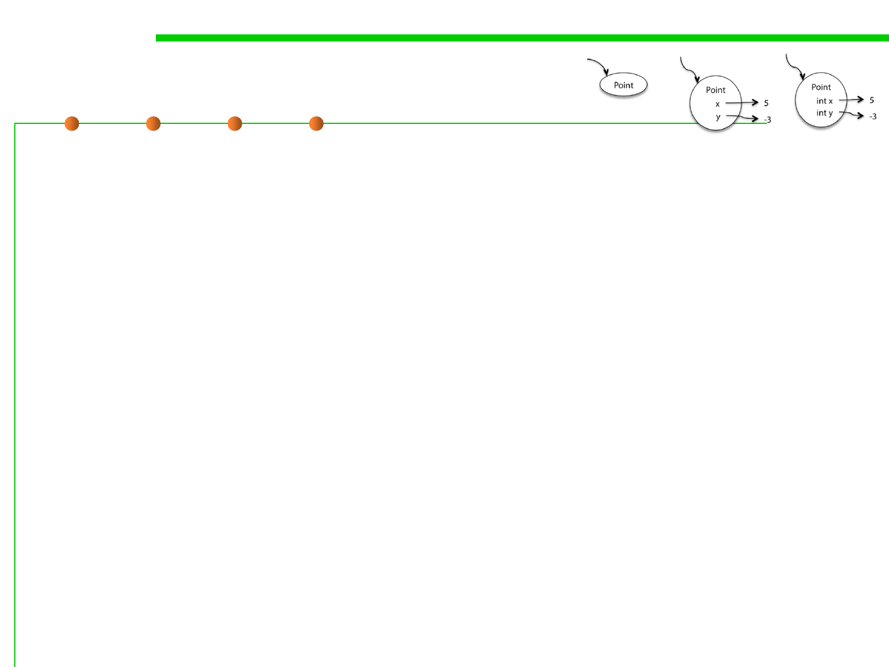

Snapshot diagrams
3.1 Data Type and Type Checking
▪ It will be useful for us to draw pictures of what’s happening at
runtime, in order to understand subtle questions.
▪ Snapshot diagrams represent the internal state of a program at
runtime – its stack (methods in progress and their local variables)
and its heap (objects that currently exist).
▪ Why we use snapshot diagrams?
– To talk to each other through pictures.
– To illustrate concepts like primitive types vs. object types, immutable
values vs. immutable references, pointer aliasing, stack vs. heap,
abstractions vs. concrete representations.
– To help explain your design for your team project (with each other and
with your TA).
– To pave the way for richer design notations in subsequent courses.